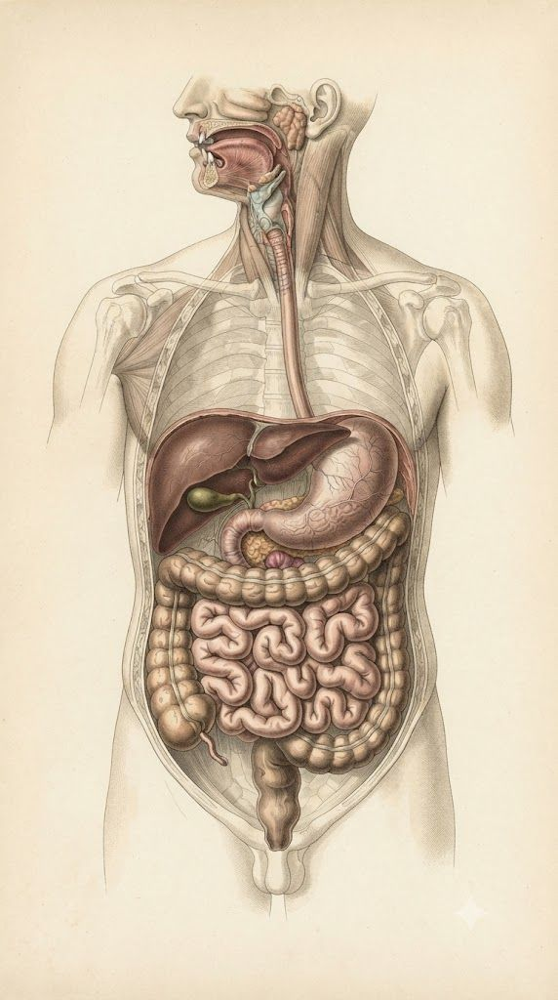

שליטה בעומס
Clutter Control
רמות הפירוט מאפשרות להציג יותר מידע רק כשצריך.
Detail levels reveal more information only when needed.
כל טאב מציג איור אנטומי נפרד. כדי למנוע צפיפות, אפשר לבחור רמת פירוט: בסיסי, בינוני או מתקדם.
Each tab displays a separate anatomical illustration. To avoid clutter, you can choose a detail level: basic, medium, or advanced.

בחר רמת פירוט. ברמה בסיסית יופיעו מעט איברים בלבד, כדי שהמסך יישאר נקי.
Choose a detail level. Basic mode shows only a few organs so the screen stays clean.
רמות הפירוט מאפשרות להציג יותר מידע רק כשצריך.
Detail levels reveal more information only when needed.
כל תמונה כוללת נקודות לחיצה ורשימת איברים.
Each image includes clickable markers and an organ list.
מכל חלון קופץ אפשר לעבור לדף מידע מורחב לאיבר.
Each popup can open a full information page for the organ.